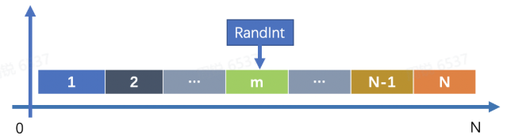
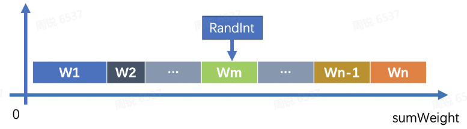

什么是负载均衡
它是一种计算机技术，用来在多个计算机（计算机集群）、网络连接、CPU、磁盘驱动器或其他资源中分配负载，以达到最优化资源使用、最大化吞吐率、最小化响应时间、同时避免过载的目的。 使用带有负载平衡的多个服务器组件，取代单一的组件，可以通过冗余提高可靠性。负载平衡服务通常是由专用软件和硬件来完成。 主要作用是将大量作业合理地分摊到多个操作单元上进行执行，用于解决互联网架构中的高并发和高可用的问题。
个人理解使用场景：在一个没有负载均衡的的 Web 架构下，User 通过 Internet 发送消息到 Web Server，然后Web server 向数据库请求返回数据到 User 那，那么这样的话如果这个服务器宕机了，那么用户就没办法访问了或者同时有很多用户试图访问服务器超过了处理的极限，就会出现加载缓慢或者无法连接的情况发生。那么通过在后端引入一个负载均衡器和至少一个额外的 Web 服务器来解决以上的场景，也就是负载均衡的初始轮廓，通常情况下，用户就不会直接访问到 Web 服务器了，而是是访问到负载均衡器，然后负载均衡器将请求转发给后端服务器，这个时候有个点就是所有的后端服务器需要保证提供相同的内容，以便用户无论哪个服务器响应，都能收到一致的内容。
负载均衡的实现方式(负载均衡有几种)
数据链路层负载均衡
通过在数据链路层修改 mac 地址进行负载均衡。把所有机器的虚拟 IP 配置成跟负载均衡机器的 IP 一致，不需要进行地址准换就能直接返回响应数据，避免负载均衡服务器网卡成为瓶颈，常用于大型站点的外网入口，LVS
IP 负载均衡
通过在在网络层修改目标地址进行负载均衡。负载均衡服务器在内核进程获取网络数据包，修改目的 IP，待真实响应服务器处理完成后，负载均衡服务器再将数据包源地址修改成自身 IP 地址。负载均衡服务器网卡容易成为瓶颈，并且没有反向代理灵活，不常用。
反向代理负载均衡
利用反向代理服务器进行负载均衡。在应用层将请求转发到 web 服务器，待 web 服务器处理完成后，再将响应返回给用户。部署简单可灵活配置，常位于内网的 web 服务器前，nginx。
HTTP重定向负载均衡
利用 HTTP 重定向协议实现负载均衡。重定向服务器将真实服务器的地址写入重定向响应中，返回 302 进行负载均衡。需要两次请求，性能较差，不常用
DNS域名解析负载均衡
利用 DNS 处理域名解析请求的同时进行负载均衡的一种方案。在 DNS 服务器配置多个 A 记录，每次域名解析根据负载均衡算法返回不同的 IP 地址。常用于大型网站的第一级负载均衡。
负载均衡涉及到的算法（负载均衡策略）
Random (随机调度)
随机算法，通过 i = rand() % n 选取第 i 台服务器

WeightRandom（加权随机调度）
与随机算法类似，需要考虑下权重因素
- 将后端每个节点当做一条线段(权重值 wi 为线段长度),顺序排列在数轴上（节点顺序无所谓），线段总长度为sumWeight
- 随机生成一个 0~sumWeight 之间的整数 RandInt，RandInt 落在哪条子线段上，就表示那条子线段所代表的节点被 LB 选中

RoundRobin（轮询调度）
通过 (i++)% n 轮询调度每一台服务器
WeightRoundRobin(加权轮询算法)
与轮询算法类似，但要考虑权重。
HashWeight（普通哈希）
普通哈希算法，通常情况下需要结合 Random 或 RondomWeight算法，
一般情况都需要考虑支持权重，将Random算法中随机数 RandInt, 替换成 HashCode = Hash(Req) 即可。
ConsistHash（一致性hash）
负载均衡处理什么样的请求
HTTP
HTTPS
TCP
UDP